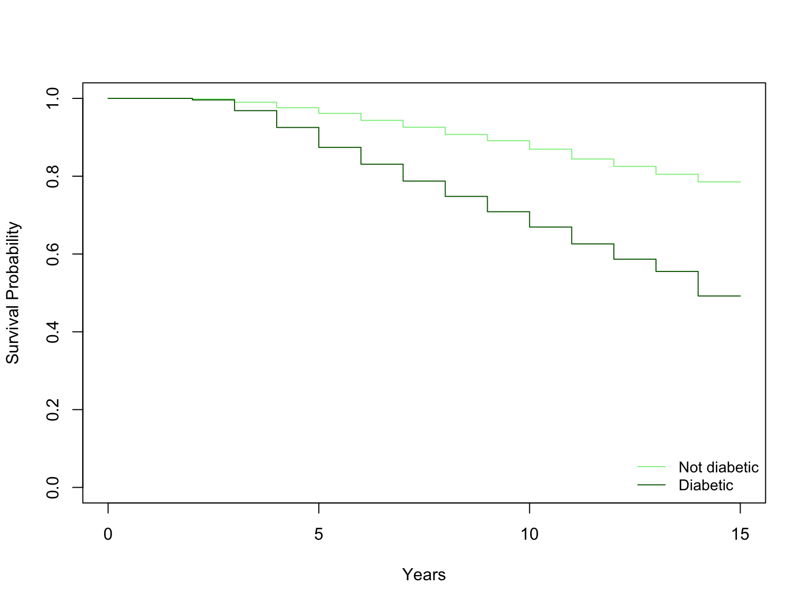

Code
# Load in libraries
library(dplyr)
library(readr)
library(survival)
library(sjPlot)At first I was afraid, I was petrified…
In this blog post, I’ll be exploring some basic survival analysis in R. Survival analysis focuses on describing the occurrence of an event (in this example death) in a set time frame. Survival analysis is often used in clinical research and cancer epidemiology. For more reading, I recommend visiting The Epidemiologist R Handbook page on survival analysis, as well as their listed resources. The following blog post was adapted from my biostatistics coursework and features data used in that course. We will create Kaplan-Meier plots and go through Cox Hazard Regression.
For this blog post, I will use the packages have, dplyr, survival.
# Load in libraries
library(dplyr)
library(readr)
library(survival)
library(sjPlot)Next, we will load the data.
sd <- read_csv("data/HM 878 730 Clements - Survival Analysis R Data.csv") %>%
mutate(
#death = factor(death, levels = c(0, 1),
# labels = c("Living", "Died")),
cursmoke = factor(cursmoke, levels = c(0, 1),
labels = c("Not current smoker", "Current smoker")),
diabetes = factor(diabetes, levels = c(0, 1),
labels = c("Not diabetic", "Diabetic")),
educ = factor(educ, levels = c(1, 2, 3, 4),
labels = c("0-11 years", "HS Diploma/GED",
"Some College/Vocational School",
"College degree or more")),
prevchd = factor(prevchd, levels = c(0, 1),
labels = c("No", "Yes")),
sex = factor(sex, levels = c(0, 1),
labels = c("Female", "Male"))
)cm <- coxph(Surv(TimeDeathYears, death) ~ cursmoke + diabetes +
educ + prevchd + age + bmi + sex, data = sd)
summary(cm)Call:
coxph(formula = Surv(TimeDeathYears, death) ~ cursmoke + diabetes +
educ + prevchd + age + bmi + sex, data = sd)
n= 3165, number of events= 746
(98 observations deleted due to missingness)
coef exp(coef) se(coef) z
cursmokeCurrent smoker 0.432597 1.541256 0.081165 5.330
diabetesDiabetic 0.741622 2.099338 0.100251 7.398
educHS Diploma/GED -0.007861 0.992169 0.092149 -0.085
educSome College/Vocational School -0.158231 0.853652 0.111205 -1.423
educCollege degree or more -0.454487 0.634773 0.131159 -3.465
prevchdYes 0.790013 2.203425 0.086862 9.095
age 0.092917 1.097370 0.005068 18.333
bmi -0.012792 0.987290 0.009667 -1.323
sexMale 0.672732 1.959583 0.075393 8.923
Pr(>|z|)
cursmokeCurrent smoker 9.83e-08 ***
diabetesDiabetic 1.39e-13 ***
educHS Diploma/GED 0.93201
educSome College/Vocational School 0.15477
educCollege degree or more 0.00053 ***
prevchdYes < 2e-16 ***
age < 2e-16 ***
bmi 0.18575
sexMale < 2e-16 ***
---
Signif. codes: 0 '***' 0.001 '**' 0.01 '*' 0.05 '.' 0.1 ' ' 1
exp(coef) exp(-coef) lower .95 upper .95
cursmokeCurrent smoker 1.5413 0.6488 1.3146 1.8070
diabetesDiabetic 2.0993 0.4763 1.7248 2.5551
educHS Diploma/GED 0.9922 1.0079 0.8282 1.1886
educSome College/Vocational School 0.8537 1.1714 0.6865 1.0615
educCollege degree or more 0.6348 1.5754 0.4909 0.8208
prevchdYes 2.2034 0.4538 1.8585 2.6124
age 1.0974 0.9113 1.0865 1.1083
bmi 0.9873 1.0129 0.9688 1.0062
sexMale 1.9596 0.5103 1.6904 2.2716
Concordance= 0.761 (se = 0.009 )
Likelihood ratio test= 688.4 on 9 df, p=<2e-16
Wald test = 686.8 on 9 df, p=<2e-16
Score (logrank) test = 783.3 on 9 df, p=<2e-16sjPlot::tab_model(cm)| Surv(Time Death Years,death) |
|||
| Predictors | Estimates | CI | p |
| cursmoke [Current smoker] | 1.54 | 1.31 – 1.81 | <0.001 |
| diabetes [Diabetic] | 2.10 | 1.72 – 2.56 | <0.001 |
| educ [HS Diploma/GED] | 0.99 | 0.83 – 1.19 | 0.932 |
| educ [Some College/Vocational School] |
0.85 | 0.69 – 1.06 | 0.155 |
| educ [College degree or more] |
0.63 | 0.49 – 0.82 | 0.001 |
| prevchd [Yes] | 2.20 | 1.86 – 2.61 | <0.001 |
| age | 1.10 | 1.09 – 1.11 | <0.001 |
| bmi | 0.99 | 0.97 – 1.01 | 0.186 |
| sex [Male] | 1.96 | 1.69 – 2.27 | <0.001 |
| Observations | 3165 | ||
| R2 Nagelkerke | 0.200 | ||
surv_fit_diab <- survfit(Surv(TimeDeathYears, death) ~ diabetes, data = sd)
col_diab <- c("lightgreen", "darkgreen")
plot(
surv_fit_diab,
col = col_diab,
xlab = "Years",
ylab = "Survival Probability")
legend(
"bottomright",
legend = c("Not diabetic","Diabetic"),
col = col_diab,
lty = 1,
cex = .9,
bty = "n")
Hazard ratios for the cox regression show that smoker status, diabetic status, prevalent coronary heart disease, age, sex, and the highest level of education all have significant p-values. This means that each were found to impact the outcome of death in our survival analysis.
Smoker status has a hazard ratio of 1.54 meaning that, compared to non-smokers, current smokers have 1.54 times the risk of death.
Diabetic status has a hazard ratio of 2.10. This means that those with diabetes, compared to those that were not diabetic, had 2.1 times greater risk of death.
Education at the level of college degree or more had a hazard ratio of 0.63. Compared to those with 0-11 years of education, this group had 37% decreased risk of death.
Prevalence of coronary heart disease has a hazard ratio of 2.20, meaning that compared to those without CHD, they had 120% increased risk of death.
Age also has a significant p-value, and a hazard ratio of 1.10. This means for every increase unit in age, there is 10% greater risk of death.
Lastly, sex had a hazard ratio of 1.96. This means that compared to females, males had 95% greater risk of death.
The survival curve shows the difference in survival probability between diabetics and non-diabetics. The differences are quite noticeably, with a lower survival probability among diabetics. This is in line with the results of the cox regression. For example, at 10 years, the survival probability among non-diabetics is about 85%, while the probability among diabetics is 65%.
Conduct Kaplan-Meier for each categorical IV. Interpret the summary, mean and median survival time, Log Rank Mantel-Cox Test, survival probability at 10 years. Compare and contrast between each variable.
Because I have to compare quite a few variables, I make a quick function to output exactly what I need.
km <- function(time, event, data, iv, title_label){
model <- survfit(Surv(time, event) ~ iv, data = sd)
cols <- RColorBrewer::brewer.pal(4, "Set1")
plot_title <- paste("Survival Curve by", title_label)
plot(
model,
col = cols,
lwd = 2,
main = plot_title,
xlab = "Years",
ylab = "Survival Probability")
legend(
"bottomleft",
legend = levels(iv),
col = cols,
lty = 1,
cex = .9,
bty = "n")
abline(h = seq(0,1,.2), lty = "dashed", col = "gray75")
abline(lty = "dashed", col = "black", v = 10)
cat("Model summary with mean and median: \n")
print(model, print.rmean = TRUE)
logrank <- survdiff(Surv(time, event) ~ iv, data = data)
print(logrank)
}km(sd$TimeDeathYears, sd$death, sd, sd$diabetes, "Diabetes")
Model summary with mean and median:
Call: survfit(formula = Surv(time, event) ~ iv, data = sd)
n events rmean* se(rmean) median 0.95LCL 0.95UCL
iv=Not diabetic 3009 646 13.7 0.0525 NA NA NA
iv=Diabetic 254 129 11.8 0.2540 14 13 NA
* restricted mean with upper limit = 15
Call:
survdiff(formula = Surv(time, event) ~ iv, data = data)
N Observed Expected (O-E)^2/E (O-E)^2/V
iv=Not diabetic 3009 646 724.5 8.5 133
iv=Diabetic 254 129 50.5 121.8 133
Chisq= 133 on 1 degrees of freedom, p= <2e-16 As interpreted before, the survival probability differs quite drastically between these two groups. At 10 years, the survival probability among non-diabetics is about 85%, while the probability among diabetics is 65%.
The model summary shows the total number in each group and the number of events (deaths) in each group.
The mean survival time is 13.7 years for non-diabetics, compared to 11.8 for diabetics. The median survival time could not be computed for non-diabetics, and was 14 years for diabetics. The median was not computed for non-diabetics because over 50% were still alive by the end of the time period.
The Log Rank Mantel-Cox Test shows a resulting p-value of <0.0001, meaning that the null hypothesis, that there is no difference in survival between groups, is rejected.
km(sd$TimeDeathYears, sd$death, sd, sd$cursmoke, "Smoker Status")
Model summary with mean and median:
Call: survfit(formula = Surv(time, event) ~ iv, data = sd)
n events rmean* se(rmean) median 0.95LCL 0.95UCL
iv=Not current smoker 2142 501 13.6 0.0649 NA NA NA
iv=Current smoker 1121 274 13.5 0.0922 NA NA NA
* restricted mean with upper limit = 15
Call:
survdiff(formula = Surv(time, event) ~ iv, data = data)
N Observed Expected (O-E)^2/E (O-E)^2/V
iv=Not current smoker 2142 501 510 0.173 0.517
iv=Current smoker 1121 274 265 0.333 0.517
Chisq= 0.5 on 1 degrees of freedom, p= 0.5 The model results show that the mean survival time was 13.6 among non-smokers and 13.5 among current smokers. These are not very different from each other, and on par with the average survival time of non-diabetics. The median survival times were not able to be calculated for this variable.
The Log Rank test shows a p-value of 0.5 indicating we should accept the null hypothesis that there is no difference in survival between the two groups.
At 10 years, the survival probability is nearly the same between the two groups, a bit greater than 80%. Once again, similar to non-diabetic suvival probability at the same time.
km(sd$TimeDeathYears, sd$death, sd, sd$educ, "Education")Model summary with mean and median:
Call: survfit(formula = Surv(time, event) ~ iv, data = sd)
82 observations deleted due to missingness
n events rmean* se(rmean) median 0.95LCL
iv=0-11 years 1281 381 13.2 0.0936 NA NA
iv=HS Diploma/GED 967 194 13.8 0.0911 NA NA
iv=Some College/Vocational School 542 108 13.9 0.1188 NA NA
iv=College degree or more 391 71 14.0 0.1275 NA NA
0.95UCL
iv=0-11 years NA
iv=HS Diploma/GED NA
iv=Some College/Vocational School NA
iv=College degree or more NA
* restricted mean with upper limit = 15
Call:
survdiff(formula = Surv(time, event) ~ iv, data = data)
n=3181, 82 observations deleted due to missingness.
N Observed Expected (O-E)^2/E (O-E)^2/V
iv=0-11 years 1281 381 291.6 27.40 45.74
iv=HS Diploma/GED 967 194 234.0 6.84 10.14
iv=Some College/Vocational School 542 108 131.9 4.32 5.36
iv=College degree or more 391 71 96.5 6.74 7.91
Chisq= 46.4 on 3 degrees of freedom, p= 5e-10 This model summary compares each of the four education levels in our variable. The mean survival years for those 0-11 is 13.2, for HS/Diploma/GED it is 13.8, for Some College/Vocational School it is 13.9 and for College degree or more it is 14. These are close to the averages we saw among smokers/nonsmokers, and non-diabetics. However, diabetics have still had the lowest average at 11 years. Once again, the medians could not be calculated for this variable because of the high proportion of groups surviving by the end of the time period.
The Log Rank test shows a p-value of <0.0001. This leads us to reject the null and accept the alternative hypothesis that there is a significant difference in survival time between these groups (somewhere).
The survival probability at 10 years is 80% for the group 0-11, and around 90% for the other three groups. This is in the range of most groups thus far, aside from diabetics.
km(sd$TimeDeathYears, sd$death, sd, sd$prevchd, "CHD Prevalence")Model summary with mean and median:
Call: survfit(formula = Surv(time, event) ~ iv, data = sd)
n events rmean* se(rmean) median 0.95LCL 0.95UCL
iv=No 2903 582 13.8 0.0522 NA NA NA
iv=Yes 360 193 11.7 0.2077 14 12 NA
* restricted mean with upper limit = 15
Call:
survdiff(formula = Surv(time, event) ~ iv, data = data)
N Observed Expected (O-E)^2/E (O-E)^2/V
iv=No 2903 582 704.1 21.2 237
iv=Yes 360 193 70.9 210.4 237
Chisq= 237 on 1 degrees of freedom, p= <2e-16 Those without coronary heart disease had an average survival time of 13.8 years, while those with CHD had an average of 11.7 years. The median was only calculated for those with CHD, which was at 14 years. These metrics align with results from many other groups. the average survival years for those without CHD is comparable to the same metrics examined among the three highest education levels, smokers and non-smokers, and non-diabetics. Diabetics and those with CHD have similar average survival time.
The Log Rank Test shows a p-value of less than 0.0001. This leads us to reject the null and accept the alternative hypothesis that there is a difference in survival times between the two groups.
Looking at the survival curve, the survival probability of those with CHD at 10 years is about 65%. The survival probability of those without CHD is around 90%. This is a comparable split to diabetics/non-diabetics.
km(sd$TimeDeathYears, sd$death, sd, sd$sex, "Sex")Model summary with mean and median:
Call: survfit(formula = Surv(time, event) ~ iv, data = sd)
n events rmean* se(rmean) median 0.95LCL 0.95UCL
iv=Female 1876 345 13.9 0.0635 NA NA NA
iv=Male 1387 430 13.1 0.0894 NA NA NA
* restricted mean with upper limit = 15
Call:
survdiff(formula = Surv(time, event) ~ iv, data = data)
N Observed Expected (O-E)^2/E (O-E)^2/V
iv=Female 1876 345 458 28.0 70.1
iv=Male 1387 430 317 40.5 70.1
Chisq= 70.1 on 1 degrees of freedom, p= <2e-16 For the Kaplan-Meier examining sex, the model results show that the average survival time among females was 13.9 compared to male’s 13.1. This is a similar split between the highest and lowest education levels. Overall, this seems to be a significant difference, but not as big of a difference as CHD or diabetes status. The medians for these groups could not be calculated.
The Log Rank Test shows a p-value of less than 0.0001, which again leads us to accept the alternative hypothesis that this model shows a significant difference in survival time between the two groups.
On the survival curve, it appears that at 10 years, males had 80% survival probability, and females had about 90%. This is a much closer gap, agian comparable to the difference between education level. The gap is narrower among smokers and non-smokers, but larger when diabetes or CHD is examined.
The cox regression showed that smoker status, diabetes status, education level (college degree or more), CHD status, age, and sex were all statistically significant in the model. The highest increased hazard ratios were from the variables for CHD and diabetes.
When we examine the Kaplan-Meier and Log Rank tests, all categorical variables were significant except for smoker status. This difference was not expected. Being that the cox regression showed it as significant and with a fairly high hazard ratio, I expected to see a bigger difference in survival time. Perhaps this is due to comorbidities associated with this variable. But the two largest hazard ratios in the cox regression, diabetes and CHD, displayed the biggest differences in suvival time, which was expected. Also, variables like education and sex showed smaller but still present difference in line with cox regression results.
Cox regression is obviously necessary whenever you are interested in a continuous variable’s relationship to the outcome. It is also preferred when you have multiple groups in a categorical variables. As we saw in this project, education level was shown as significant using both methods. However, cox regression gave us a greater level of detail of increased risk within groups. The Kaplan-Meier (and Log Rank test) simply told us there was a significant difference somewhere within the groups.
There are other advantages to picking a particular method. For instance, if you are more interested in metrics like average survival time, KP delivers that information. If you are looking for information for example in a clinical trial, a cox regression may be preferable due to the hazard ratio it gives you. This may be more practical too if you are interested in multiple factors influencing an outcome. KP is limited to one factor at a time.
Lastly, Kaplan-Meier may be the most reliable method to use if you have data that do not meet the proper assumptions, as KP is a non-parametric test. Cox regression is semi-parametric, meaning there are some assumptions that must be met. In this way, it may be easier to apply KP to ill fitting data. But one method is not “better” than the other, they are simply different techniques that answer slightly different questions.